Многоугольники
Квадрат
Квадрат-прямоугольник, у которого две соседние стороны равны; ромб, у которого есть прямой угол
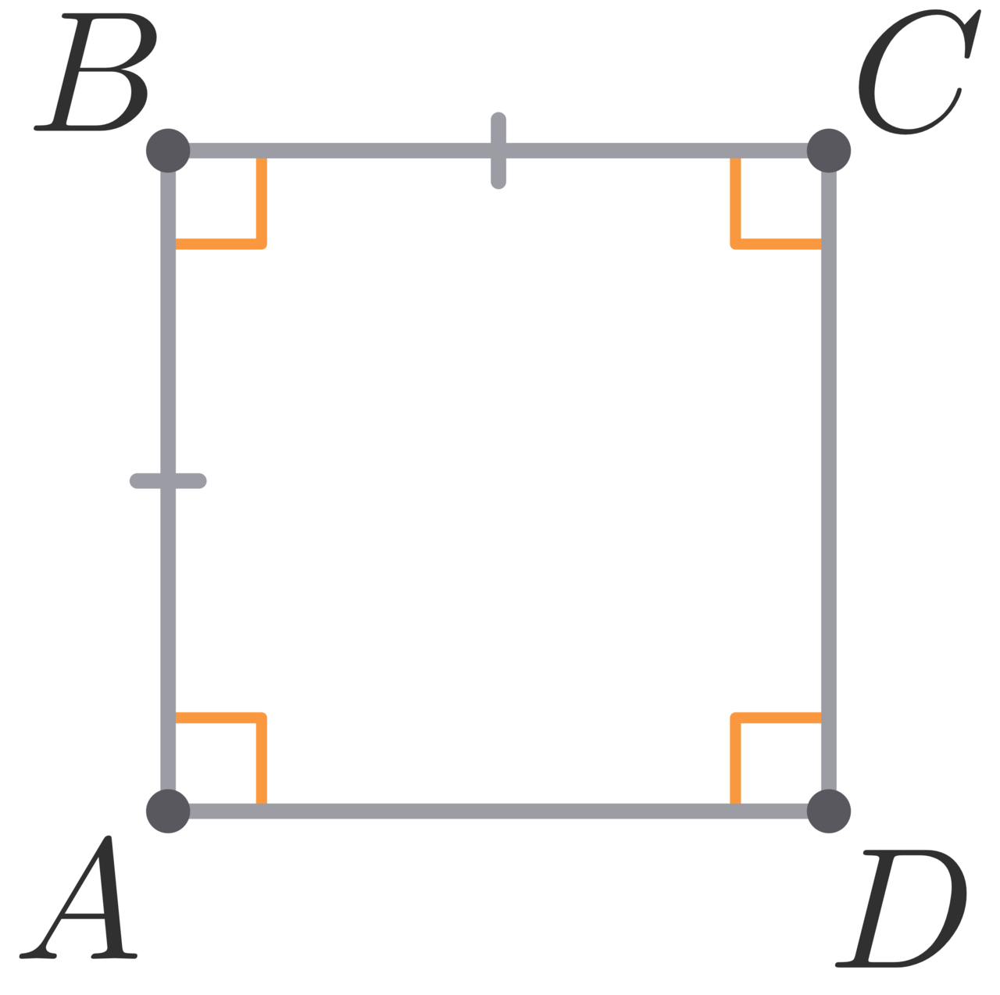Признаки квадрата
1.Если в ромбе диагонали равны, то он является квадратом.
2.Если в прямоугольнике диагонали перпендикулярны, то он является квадратом.
3.Если в прямоугольнике одна из диагоналей является биссектрисой какого-либо его угла, то данный прямоугольник является квадратом.
Свойства квадрата
1.Все стороны равны
2.Каждый угол равен 90 градусов
3.Диагонали равны и точкой пересечения делятся пополам
4.Диагонали взаимно перпендикулярны
5.Диагонали являются биссектрисами углов
6.Диагонали делят квадрат на 4 равных прямоугольных равнобедренных треугольника
Прямоугольник
Четырёхугольник, в котором есть три прямых угла, называется прямоугольником.
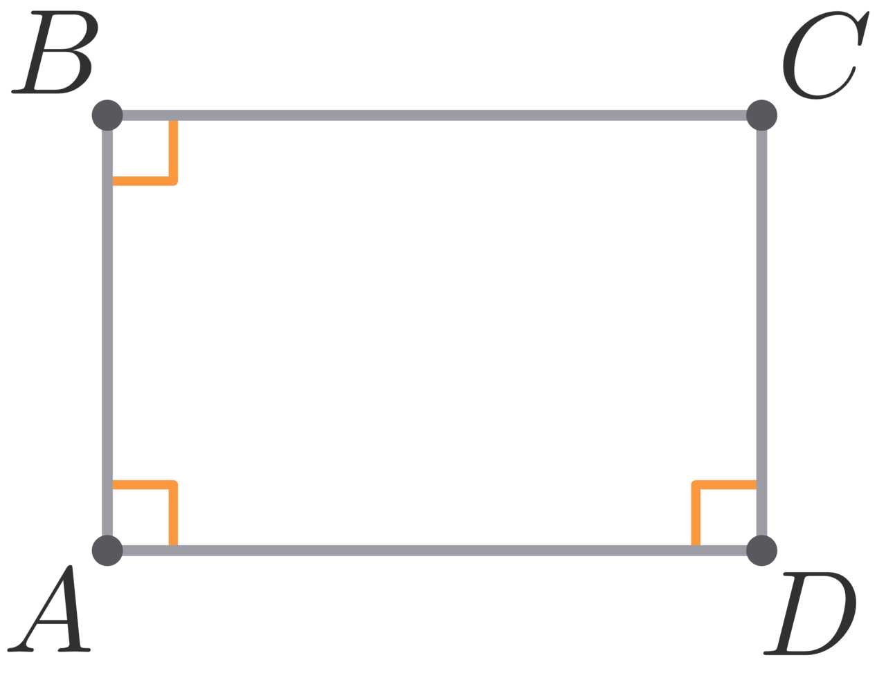Признаки прямоугольника
1.Если в параллелограмме один из углов прямой, то параллелограмм является прямоугольником.
2.Если диагонали параллелограмма равны, то этот параллелограмм является прямоугольником.
Свойства прямоугольника
1.Прямоугольник является параллелограммом.
2.Все углы прямоугольника прямые.
3.Диагонали прямоугольника равны.
Ромб
Четырёхугольник, в котором все стороны равны, называется ромбом.
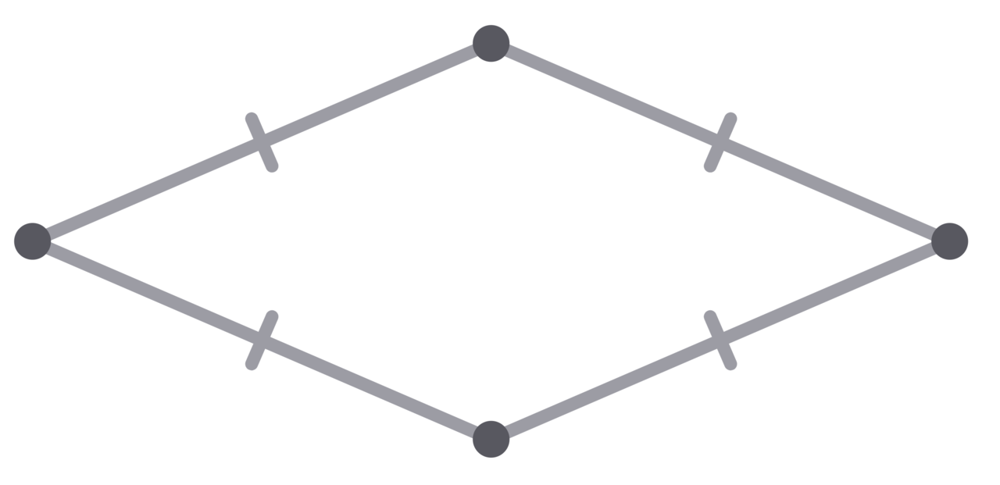Признаки ромба
1.Если в параллелограмме две соседние стороны равны, то он является ромбом.
2.Если диагонали параллелограмма взаимно перпендикулярны, то этот параллелограмм является ромбом.
3.Если диагональ параллелограмма является биссектрисой его угла, то этот параллелограмм является ромбом.
Свойства ромба
противоположные углы попарно равны;
соседние - в сумме дают 180 градусов;
диагонали пересекаются и точкой пересечения делятся пополам
а также все свойства параллелограмма
Параллелограмм
Параллелограммом называется четырёхугольник, у которого противоположные стороны попарно параллельны.
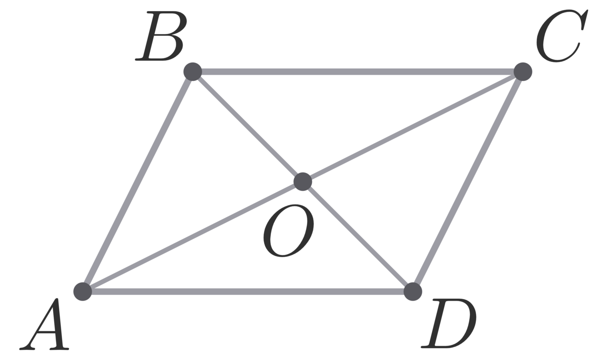Признаки параллелограмма
1.Если в четырёхугольнике сумма любых двух соседних углов равна 180 градусам, то этот четырёхугольник - параллелограмм.
2.Если в четырёхугольнике противолежащие углы попарно равны, то этот четырёхугольник - параллелограмм.
3.Если в четырёхугольнике противолежащие стороны попарно равны, то этот четырёхугольник - параллелограмм.
4.Если в четырёхугольнике две стороны равны и параллельны, то этот четырёхугольник - параллелограмм.
5.Если диагонали четырёхугольника делятся точкой их пересечения пополам, то этот четырёхугольник - параллелограмм.
Свойства параллелограмма
1.Сумма любых двух соседних углов параллелограмма равна 180 градусам, а противоположные углы равны.
2.Противолежащие стороны параллелограмма равны.
3.Диагонали параллелограмма пересекаются и точкой пересечения делятся пополам.
Теорема Вариньона
Параллелограмм Вариньона – это четырехугольник, образованный серединами сторон некоторого четырехугольника.
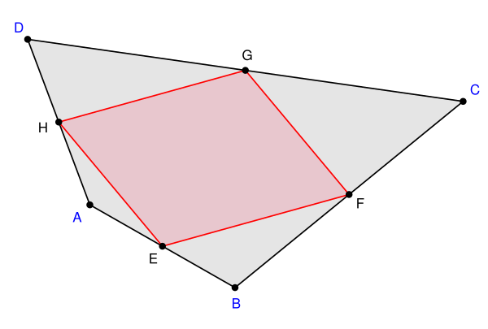Следствия:
Центр параллелограмма Вариньона лежит на середине отрезка, соединяющего середины сторон исходного четырёхугольника (в этой же точке пересекаются отрезки, соединяющие середины противоположных сторон — диагонали вариньоновского параллелограмма).
Периметр параллелограмма Вариньона равен сумме диагоналей исходного четырёхугольника.
Площадь параллелограмма Вариньона равна половине площади исходного четырёхугольника.
Для прямоугольника и равнобедренной трапеции параллелограммом Вариньона является ромб, а для ромба — прямоугольник.
Параллелограмм Вариньона является ромбом тогда и только тогда, когда в исходном четырехугольнике 1) диагонали равны 2) бимедианы перпендикулярны.
Параллелограмм Вариньона является прямоугольником тогда и только тогда, когда в исходном четырехугольнике: 1) диагонали перпендикулярны; 2) бимедианы равны.
Параллелограмм Вариньона является квадратом тогда и только тогда, когда в исходном четырехугольнике 1) диагонали равны и перпендикулярны; 2) бимедианы равны и перпендикулярны.
Треугольники
Треугольник — многоугольник, у которого три стороны и три угла.
Признаки равенства треугольников
Равные треугольники — это треугольники, у которых соответствующие стороны и углы равны.
1.Если две стороны и угол между ними одного треугольника соответственно равны двум сторонам и углу между ними другого треугольника, то треугольники равны.
2.Если сторона и два прилежащих к ней угла одного треугольника соответственно равны стороне и двум прилежащим к ней углам второго треугольника, то треугольники равны.
3.Если три стороны одного треугольника соответственно равны трем сторонам другого, то треугольники равны.
Подобные треугольники
Подобные треугольники — это треугольники, все углы которых соответственно равны, а стороны соответственно пропорциональны.
Коэффициент подобия — это коэффициент, который показывает, во сколько раз отличаются длины сторон подобных треугольников.
Признаки подобия треугольников:
1.Если две стороны одного треугольника соответственно пропорциональны двум сторонам другого треугольника, а углы, заключенные между ними, равны, то такие треугольники подобны.
2.Если два угла одного треугольника соответственно равны двум углам другого треугольника, то такие треугольники подобны.
Если три стороны одного треугольника соответственно пропорциональны трем сторонам другого треугольника, то такие треугольники подобны.
Факты:
1. Отношение всех элементов подобных треугольников равняется коэффициенту подобия.
2. Отношение периметров подобных треугольников равняется коэффициенту подобия.
3. Отношение площадей подобных треугольников равняется квадрату коэффициента подобия.
Средняя линия треугольника
Средней линией треугольника называется отрезок, соединяющий середины двух его сторон.
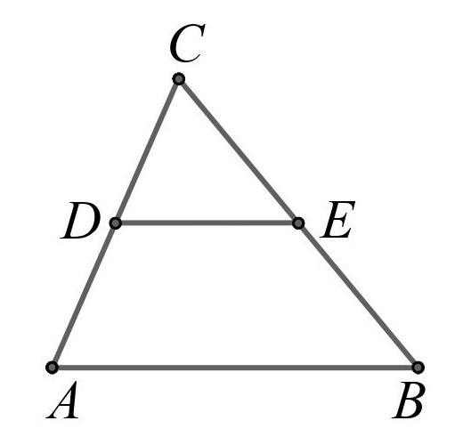DE - средняя линия
Средняя линия треугольника параллельна третьей стороне треугольника, а длина средней линии треугольника равна половине этой стороны.
Равнобедренный треугольник
Равнобедренный треугольник — треугольник, у которого две стороны равны.

Свойства равнобедренного треугольника:
1.В равнобедренном треугольнике углы при основании равны.
2.Юиссектриса,проведенная к основанию является медианой и высотой
Равносторонний треугольник
Равносторонний треугольник — треугольник, у которого все стороны равны.
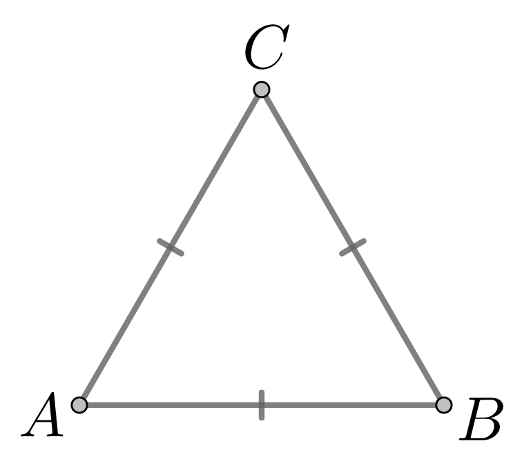Свойства равностороннего треугольника:
1.Все углы равны 60 градусам
2.Каждая медиана совпадает с биссектрисой и высотой,проведенными из той же вершины
3.Центры вписанной и описанной окружности совпадают(радиус вписанный окружности в 2 раза меньше радиуса описанной)
Прямоугольный треугольник
Треугольник, у которого один из углов прямой, называется прямоугольным. Сторона, лежащая напротив прямого угла, называется гипотенузой, а две другие — катетами.
Свойства прямоугольного треугольника:
1.Медиана прямоугольного треугольника, проведенная к гипотенузе, равна ее половине.
2.В прямоугольном треугольнике катет, лежащий напротив угла в 30 градусов, равен половине гипотенузы.
3.Центр окружности, описанной около прямоугольного треугольника, лежит на середине гипотенузы.
Теорема Пифагора
Квадрат длины гипотенузы прямоугольного треугольника равен сумме квадратов длин его катетов.
Теорема, обратная теореме Пифагора:Если в треугольнике квадрат длины одной стороны равен сумме квадратов длин других сторон, то этот треугольник – прямоугольный.
Теоремы о биссектрисе
1.Каждая точка на биссектрисе равноудалена от сторон угла
2.Биссектриса делит сторону к которой она проведена на отрезки пропорцианальные боковым сторонам
Теоремы о медиане
1.Все медианы треугольника пересекаются в одной точке и этой точкой делятся на 2 части в отношении 2:1 начиная с вершины
2.Медиана делит треугольник на 2 равновеликих(равных по площади)
3.В равностороннем треугольнике все мидианы равны между собой
Теорема о треугольниках с равными углами
Отношение площадей треугольников с равными углами равно отношению произведений сторон,заключающих эти углы
Теорема о треугольниках с равными высотами
Отношение площадей треугольников с равными высотами равно отношению оснований,к которым эти высоты проведены
Теорема Фалеса
Если параллельные прямые пересекают две данные прямые и отсекают на одной из них равные отрезки, то они отсекают равные отрезки и на другой данной прямой.
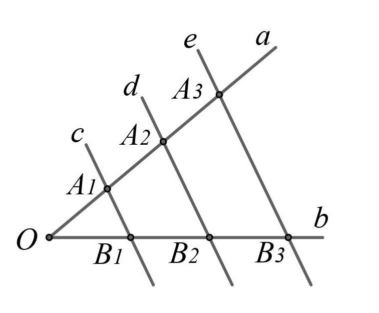Трапеция
Трапецией называется четырёхугольник, у которого две стороны параллельны, а две другие — не параллельны.
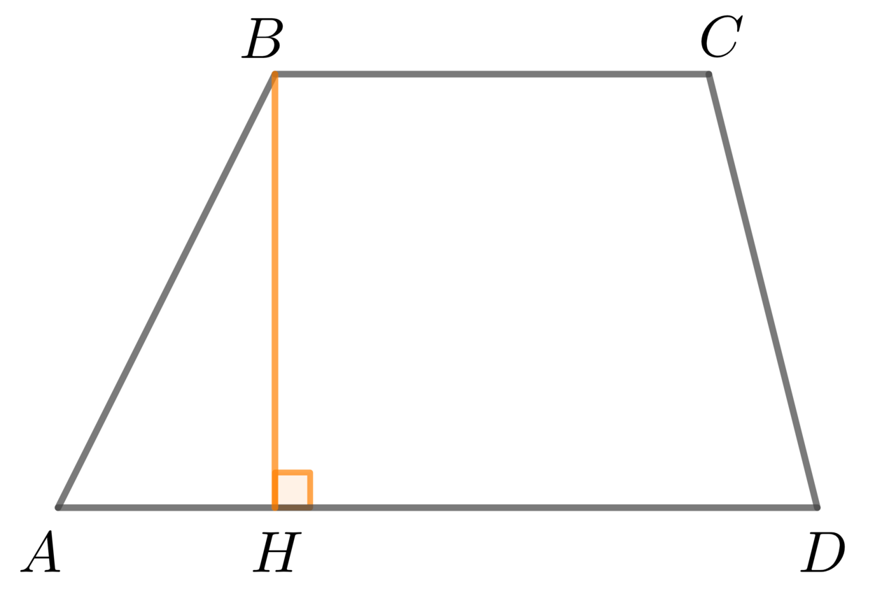Свойства трапеции:
1.Биссектриса любого угла отсекает на ее основании отрезок,равный боковой стороне
2.Точка пересечения диагоналей,точка пересечения продолжений боковых сторон и середины оснований лежат на 1 прямой
3.Противолежащие треугольники,образованные при пересечении диагоналей трапеции равны между собой
4.Юоковая сторона трапеции видна из центра вписанной окружности под прямым углом
Окружность
Окружностью называется фигура, которая состоит из всех точек плоскости, равноудаленных от данной точки (называемой центром окружности).
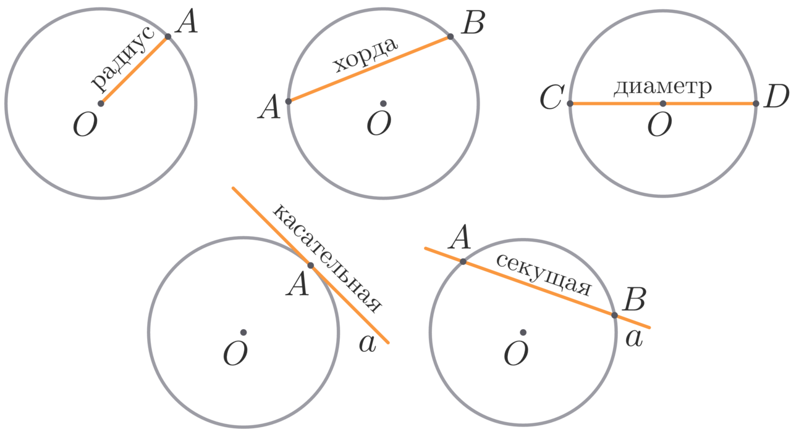Свойства касательной
1.Касательная к окружности перпендикулярна радиусу, проведённому в точку касания
2.Отрезки касательных, проведённых из одной точки к окружности, равны.
3.Эти отрезки составляют равные углы с прямой, проходящей через эту точку и центр окружности.
Теорема об отрезках хорд
Если 2 хорды пересекаются,то произведение отрезков одной хорды равно произведению отрезков другой хорды
Теорема о квадрате касательной
Если из одной точки к окружности проведена секущая и касательная,то произведение всей секущей на ее внешнюю часть равно квадрату касательной
Центральные и вписанные углы
Центральный угол — это угол, вершина которого лежит в центре окружности.
Центральный угол равен градусной мере дуги, на которую он опирается.
Вписанный угол — это угол, вершина которого лежит на окружности.
Вписанный угол равен половине дуги, на которую опирается.
Теоремы об углах, образованных хордами, касательными и секущими
Угол между хордами
Величина угла, образованного пересекающимися хордами, равна половине суммы величин дуг, заключённых между его сторонами.
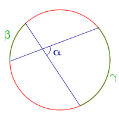Угол между секущими
Величина угла, образованного секущими, пересекающимися вне круга, равна половине разности величин дуг, заключённых между его сторонами
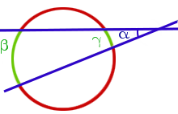Угол между касательной и хордой
Величина угла, образованного касательной и хордой, проходящей через точку касания, равна половине величины дуги, заключённой между его сторонами
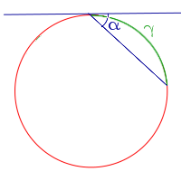Угол между касательной и секущей
Величина угла, образованного касательной и секущей, равна половине разности величин дуг, заключённых между его сторонами
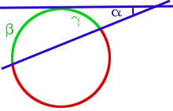Угол между касательными
Величина угла, образованного двумя касательными к окружности, равна половине разности величин дуг, заключённых между его сторонами
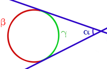Вписанные и описанные фигуры
Вписанная и описанная окружность вокруг треугольника
Описанная окружность — это окружность, которая проходит через все вершины треугольника.
Центр такой окружности равноудален от вершин треугольника. Центр описанной окружности лежит в точке пересечения серединных перпендикуляров треугольника.
Вписанная окружность — это окружность, которая касается всех сторон треугольника.
Центр вписанной окружности лежит в точке пересечения биссектрис треугольника.
Вписанные и описанные четырехугольники
Вписанный четырехугольник — четырехугольник, все вершины которого лежат на одной окружности.Эта окружность будет называться описанной вокруг четырехугольника.
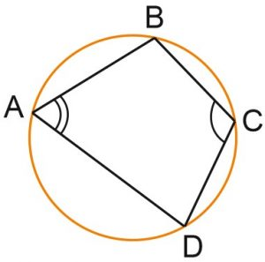Свойство:
Во вписанном четырехугольнике сумма противоположных углов равна 180 градусов
Признак:
Если в четырехугольнике сумма противоположных углов равна 180 градусов,то вокруг него можно описать окружность
Описанный четырехугольник — такой, что все его стороны касаются одной окружности.
В этом случае окружность вписана в четырехугольник.
Свойство:
Суммы противоположных сторон равны
Признак:
Четырёхугольник можно описать вокруг окружности тогда и только тогда, когда суммы его противоположных сторон равны.
S вписанного четырехугольника равна p*r,где p - полупериметр,r - радиус вписанной окружности
Векторы
Вектор — это отрезок, для которого указано, какая из его граничных точек считается началом, а какая — концом.
Колинеарные векторы
Ненулевые векторы называются коллинеарными, если они лежат на одной прямой (рис. 1) или на параллельных прямых
Колинеарные векторы делятся на:сонаправленные(лежат в одной полуплоскости относительно прямой,соединающей их начала) и противоположнонаправленные(лежат в разных полуплоскостях относительно прямой,соединающей их начала)
Нулевой вектор сонаправлен с любым вектором
Равные векторы
Два вектора называются равными,если длины их равны и они сонаправлены
Правила сложения двух векторов
Правило треугольника:
Сумма двух векторов a и b определяется следующим образом. От какой-нибудь точки A откладывается вектор AB, равный вектору a. Затем от точки B откладывается вектор BC, равный вектору b. Тогда вектор AC называется суммой векторов a и b
Правило параллелограмма:
Чтобы сложить два неколлинеарных вектора a и b, надо отложить их от одной произвольно выбранной точки A и достроить до параллелограмма ABCD; тогда вектор AC равен сумме векторов a и b.
Правило многоугольника:
Если векторов несколько, то их сложение производится следующим образом: первый вектор складывается со вторым, затем их сумма складывается с третьим вектором и т.д.
Из правила треугольника и его свойств следует, что сумма нескольких векторов не зависит от того, в каком порядке они складываются.
Это правило построения суммы нескольких векторов называется правилом многоугольника.
Произведение вектора на число
Произведением ненулевого вектора a на ненулевое число k называется такой вектор b, длина которого равна |k|*|a|, причём векторы a и b сонаправлены при k>0 и противоположно направлены при k<0
Координаты вектора
Единичный вектор - вектор, длина которого равна единице.
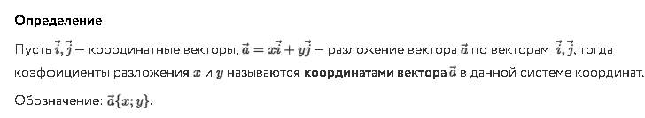 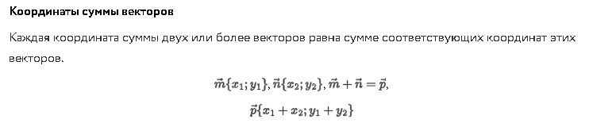 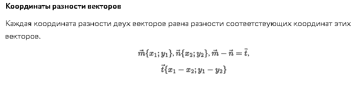 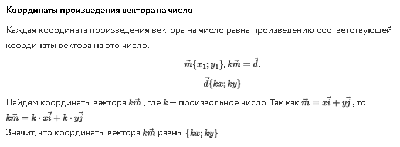 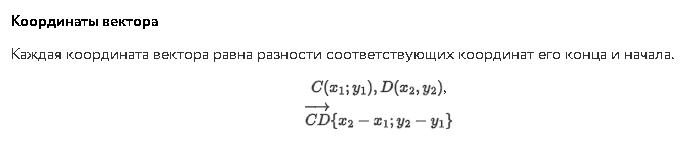Скалярное произведение векторов
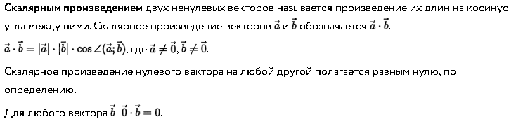Скалярное произведение векторов в координатах
Скалярное произведение двух векторов равно сумме произведений их соответствующих координат.
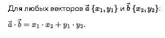Теорема синусов и косинусов
Теорема синусов
Сторона треугольника пропорцианальна синусам противолежащих углов и это отношение равно двум радиусам описанной окружности
Теорема косинусов
В треугольнике квадрат стороны равен сумме квадратов других сторон минус удвоенное произведение этих сторон на косинус угла между ними
Правильные многоугольники
Правильный многоугольник — выпуклый многоугольник, у которого равны все стороны и все углы между смежными сторонами.
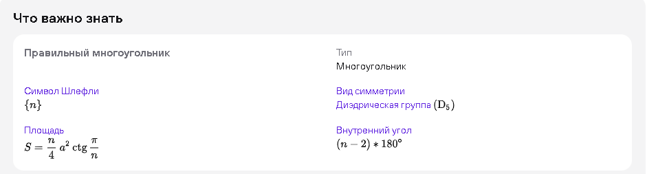Количество диагоналей n-угольника высчитывается по формуле:n(n-3)/2
Вписанная и описанная окружность вокруг правильного многоугольника
Теоремы:
Около любого правильного многоугольника можно описать окружность и при том только 1
В любой правильный многоугольник можно вписать окружность и при том только одну
Следствия:
Окружность,вписанная в правильный многоугольник касается всех его сторон в их серединах
Центр окружности,описанной около правильного многоугольника,совпадает с центром окружности,вписанной в тот же многоугольник